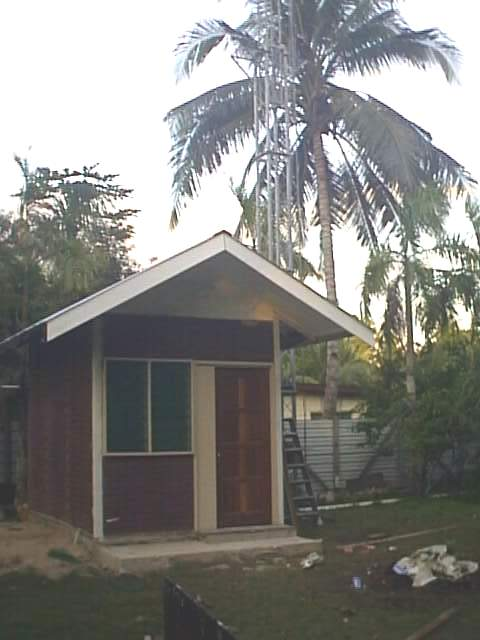
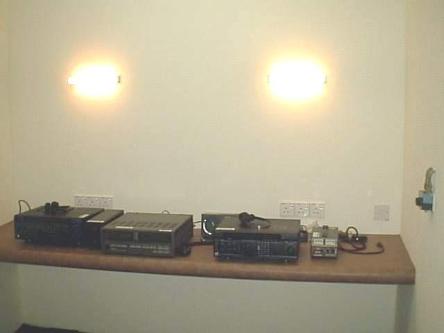
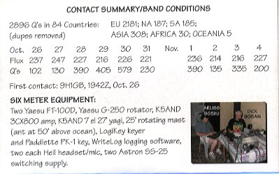

|
Flash ! DX
|
|
Flash ! DX
|
[Back Issues Feb.2002]
TIME:UTC(JST-09:00)
Report from JA1RJU (PM95sq)
28.Feb.2002(15:00e)
CT1HZE 22:29 50.120 SSB LP
I0JX 22:32 50.100 CW
EH7KY 22:34 50.132 SSB
EH9IB 22:35 50.129 SSB
EH7CD 22:44 50.115 SSB
CT1DYX 22:51 50.120 SSB
CT1EEB 22:53 50.135 SSB
EH7KW 22:55 50.150 SSB CQ HL
CT1EPC 22:56 50.140 SSB
CT3DL 23:15 50.120 SSB
VK2DN 02:37 50.110 CW
VK4AFL 02:38 50.110 SSB
VK4NW 04:05 50.110 SSB
VK2EFT 06:05 50.110 CW
VK2EFT 06:26 50.110 CW
VK8RAS 06:30- 50.047 CW Beacon
VK4NW 07:12 50.110 SSB
V73AT 09:17 50.110 CW
VK4FNQ 09:41 50.110 SSB
VK4AYW 09:45 50.110 SSB
VK4WDM 09:48 50.110 SSB
VK4APE 09:50 50.110 SSB
V73SIX 09:50- 50.014 CW Beacon
VK6RSX 09:50- 50.304 CW Beacon
VK4ABP 09:50- 52.347 CW Beacon
VK4APE 10:01 50.110/180 SSB
VK4CXQ 10:45 50.110 CW
9M6SMC 13:00 50.0144 CW
27.Feb.2002(15:00f)
*9M-TV 00:00- 48.240 --
PW0T 00:15-50 50.105 CW/SSB Split 50.120-30(into JA1.2.7.0.9)
NL7Z 00:16 50.105 CW
PY2XB 00:48 50.098 CW
*VK-TV 01:00- 46.172/240 --
(PW0T 01:30- 50.105 CW JA1.2)
V73SIX 01:30- 50.014 CW Beacon
*9M-TV 02:00- 48.24/25/26--
VK2AFL 03:21 50.110/155 SSB
VK8RAS 06:00- 50.047 CW Beacon
VK6RSX 06:00- 50.304 CW Beacon
VK4ABP 06:00- 52.247 CW Beacon
VK4FNQ 06:04 50.115 SSB
VK4APG 06:12 50.110 CW
VK8RAS 11:50- 50.047 CW Beacon
VK6RSX 11:50- 50.304 CW Beacon
DU1/GM4COK 12:16 50.110 SSB
VK8MS 12:24 50.110 CW
9M6SMC 12:25- 50.0144 CW Beacon
V73SIX 12:25- 50.014 CW Beacon
VK8MS 13:36 50.110 CW
| ◎ 2月22日以来入感の無かったTrindade IslandのPW0Tが、5日ぶりに入感した。 これまで1エリア止まりだったQSOエリアもJA2、9エリアまで延びた。 今日は初めてスプリットでパイルを捌いてくれたが、相変わらず信号は弱く入感の時間も短いものだった。 |
26.Feb.2002(15:00g)
*ZL-TV 22:40- 45.24/25/26-- Strong
V73SIX 22:55- 50.014 CW Beacon
*VK-TV 23:00- 46.240 --
CE-FM 23:00 47:900 FM CE Music
*ZL-TV 00:00- 45.24/25/26--
V73SIX 00:20- 50.014 CW Beacon
*VK-TV 02:00- 46.172/240 --
VK4BLK 03:38 50.110 CW
VK8RAS 06:30- 50.047 CW Beacon
VK4NW 06:33 50.110 SSB
VK4PU 09:30 50.110 CW
V73GT 09:33 50.110/157 SSB
V73AT 09:42 50.125 CW/SSB
VK4WDM 10:55 50.110/130 SSB CQ EU
VK4FNQ 10:57 50.115 SSB CQ EU
*VK-TV 11:00- 46.172 -- Evening TEP
VK4ABP 11:00- 52.247 CW Beacon
V73SIX 11:00- 50.014 CW Beacon
VK4ABW 11:04 50.110/103 SSB/CW CQ EU
VK4TZL 11:37 50.110 SSB
VK8MS 11:41 50.110 CW/SSB
VK4CXQ 11:54 50.105 CW
9M6SMC 12:25- 50.0144 CW Beacon
V73SIX 12:25- 50.014 CW Beacon
YB0CBI 12:51 50.110 SSB
VK6RSX 13:35- 50.304 CW Beacon
VK8MS 13:36 50.110 CW
XV3AA 13:50 50.130 SSB
|
◎ Trindade IslandのDX-pedition・PW0Tは、2月19日の運用開始以来、PY5CC・Peter等の活躍で、
6mでのQSO数は2月24日現在、QSO数は1,100(SSB=789、CW=332)を超え、QSOエンティティーも72となった。
JAからは2月20、21、22日のオープン以来、QSOのリポートはない。 Trindade Islandとは、当初PY(ブラジル)との相性の良い沖縄が有利と思われていたが、 今回のPW0Tは北周りのパスで入感してきた。 この伝搬は"北極越へ"のパスに有利な北海道から東北、北関東にかけての北日本にオープンしている。 "南限"ぎりぎりでQSO出来ている1エリアでは、QM05、06など北関東の太平洋側が圧倒的に有利だった。 PW0Tの運用は、DX-Peditionとしては比較的長い日程だが、JAとはオープンしている時間が短いので、 日数の割りにQSO数はまだ多くない。 これまでのオープンではSSBの運用が多く、信号が弱い1エリアではかなり厳しい状況だった。 こんな中、モードが変わると再びパイルアップに加わり両モードでQSOしている局も多かったが、 今回の様にオープンが長続きしない短いパスでは、出来るだけ多くの局にQSOのチャンスを与えるよう、 配慮してほしいものだ。 PW0TのHomepageでは"ログチェック"も出来るので、 "保険QSO"で何度もQSOするのも控えてもらいたい。 2月23以来、コンデションが変わってしまったのが気がかりだが、 3月2日までの残された最後のチャンスに期待。 |
25.Feb.2002(15:00g)
NL7OW 23:30 50.105/130 SSB
AL7PJ 00:04 50.098 CW
*VK-TV 01:30- 46.172/240 --
*9M-TV 01:30- 48.240 --
VK4RGG 03:00- 50.057 CW Beacon
VK4PU 03:15 50.110 CW
VK4LR 03:29 50.110 SSB
VK4ABW 05:03 50.110 CW
VK4FNQ 05:07 50.110 SSB
VK2EFT 05:27 50.110 CW
VK2HO 05:32 50.110 SSB
VK8RAS 05:35- 50.047 CW Beacon
VK4ABP 05:35- 52.347 CW Beacon
VK4PU 06:40 50.110 CW
VK2EFT 09:08 50.102 CW
V73AT 09:45 50.127/121 SSB/CW CQ EU
V73GT 09:52 50.158 CW
ON4GG 10:47 50.093 CW
VK6JQ 11:44 50.108 CW
VK6RSX 11:45- 50.304 CW Beacon
VK8MS 12:23 50.110/103 CW
N7ET/DU7 13:30 50.110 CW
YB0CBI 14:24 50.110 SSB
DU1EV 14:32 50.110 CW
24.Feb.2002(15:00f)
*VK-TV 07:00- 46.172/240 --
VK8RAS 08:00- 50.047 CW Beacon
VK4NW 08:07 50.110 SSB
VK6RSX 08:35- 50.304 CW Beacon
OZ4VV 08:46 50.090 CW
SM6CMU 08:47 50.123 CW
GM3WOJ 08:50 50.136 CW
PA5TA 09:18 50.103 CW
VK4CXQ 09:20 50.105 CW
SM7FJE 09:25 50.081 CW
SM7BAE 09:26 50.090 CW
IW1DIM 09:38 50.120 CW
IZ2AAJ 09:40 50.120/104 CW
V73SIX/B 09:45- 50.014 CW Beacon
XW0X 09:53 50.125 SSB
SP6GWB 09:57 50.102 CW
ON4ANT 10:02 50.096 CW
V73AT 10:05 50.127 CW CQ EU
IV3DVN 10:07 50.145 CW
S51ZO 10:10 50.145 CW
I5MXX 10:43 50.085 CW
DL7QY 10:48 50.130 CW
DU1EV 11:55 50.107 CW
*9M-TV 12:00- 48.240/260 --
*BY-TV 12:00- 49.750 --
*VK-TV 12:00- 46.172 -- Evening TEP
VR2BB 12:55 50.112 CW
VR2XVD 12:55 50.110 SSB
N7ET/DU7 13:03 50.110 CW
VR2XMC 13:08 50.110/150 SSB
VR2XMT 13:21 50.110 SSB
VK8RAS 13:50- 50.047 CW Beacon
VK6RSX 13:50- 50.304 CW Beacon
N7ET/DU7 14:05 50.110/100 CW
VQ9JT 14:32-57 50.104 CW
DU1EV 15:00 50.110 CW
DU1BP 15:00 50.135 SSB
23.Feb.2002(15:00d)
*VK-TV 07:00- 46.172/240 --
VK8RAS 07:20- 50.047 CW Beacon
VK4NW 07:20 50.110/115 SSB
FK8CA 08:01 50.110/105 CW
VK6RSX 08:20- 50.304 CW Beacon
VK4PU 08:32 50.115 CW
VK4ADC 09:04 50.088 CW
V73AT 09:52 50.110 CW
V73AT 10:20 50.110 CW
DU1/GM4COK 11:46 50.110 CW/SSB
VK4CXQ 11:49 50.110 CW
VK4FNQ 12:00 50.110 CW
22.Feb.2002(15:00f)
(PW0T 23:55- 50.105 SSB/CW into JA7)
PW0T 00:05-30 50.105 SSB/CW into JA1-
*9M-TV 02:00- 48.240/260 --
*VK-TV 02:00- 46.172/240 --
*ZL-TV 02:00- 45.24/25/26--
VK7RST 02:15- 50.298 CW Beacon
VK4AHW 02:43 50.110/130 SSB
VK4CY 02:50 50.130/160 SSB
VK4PU 03:19 50.160 SSB
VK4KR 03:26 50.160 SSB
VK4RGG 03:30- 50.057 CW Beacon
VK4CY 05:50 50.110 SSB
VK4BLK 05:57 50.110 CW
VK4RGG 06:00- 50.057 CW Beacon
VK4BLK 05:57 50.110 CW
VK2QF 07:54 50.110 CW
VK4WR 08:28 50.110 CW
VK8RAS 11:00- 50.047 CW Beacon
VK6RSX 11:00- 50.304 CW Beacon
VK4ABP 11:00- 52.347 CW Beacon
VK6JQ 11:13 50.105 CW
21.Feb.2002(15:00e)
*??-TV 23:20- 48.2502 -- LP(120deg)
(PW0T 23:39- 50.105 SSB/CW into JA7)
PW0T 00:00-50 50.105 SSB/CW into JA1-
*VK-TV 01:00- 46.172/240 --
*ZL-TV 01:00- 45.250 --
*VK-TV 04:30- 46.172/240 --
SM7FJE 09:36 50.110 CW
OZ3K 09:37 50.110 CW/SSB
SM7BAE 09:44 50.110 SSB
G0RUZ 09:53 50.104 CW
OH3DHL 09:58 50.115 CW
OH1XT 10:02 50.103 CW
SM3JLA 10:07 50.103 CW
G4FUF 10:07 50.097 CW
V73AT 10:15 50.133/110 CW CQ EU
OZ6JQ 10:24 50.120 CW
VK4ABW 10:43 50.114 CW
SM7BAE 10:45 50.113 CW
VK8AH 14:13 50.110 CW
VK6RSX 14:40- 50.304 CW Beacon
9M6SMC 14:45- 50.0144 CW Beacon
20.Feb.2002(15:00g)
(PW0T 23:56 50.105 CW/SSB into JR6)
(PW0T 00:00- 50.105 CW/SSB into JA7.8)
PW0T 00:43 50.105 SSB 30deg weak
*ZL-TV 00:55- 45.250 --
ZL3TY 00:57 50.108 CW
VK7GK 00:58 50.100 CW
ZL3SIX 00:59- 50.040 CW Beacon
*VK-TV 01:20- 46.172/240 --
*BY-TV 01:20- 49.750 --
ZL3TY 02:07 50.110 SSB
VK7ZOO 02:14 50.110/130 SSB
VK7RST 02:24- 50.298 CW Beacon
VK7RAE 02:40- 50.0563 CW Beacon
UA0SC 02:52 50.110 CW
VK7GK 03:09 50.110 SSB
VK7ZOO 03:20 50.110 SSB
UA0SC 03:55 50.110 CW
VK3BQS 04:54 50.110 SSB/CW
VK7RAE 04:55- 50.0563 CW Beacon
*9M-TV 06:30- 48.240/260 --
V73AT 08:40 50.110 CW
XV3AA 09:40 50.130 SSB
VK8RAS 11:10- 50.047 CW Beacon
VK4TZL 11:40 50.110/120 SSB
DU1/GM4COK 11:59 50.110/108 CW CQ EU
VK6JQ 12:42 50.110 CW
XV3AA 13:25 50.130 SSB
VK8AH 13:28 50.110 SSB
VK4AFL 13:29 50.110 SSB
VK8RAS 13:40- 50.047 CW Beacon
VK6RSX 13:40- 50.304 CW Beacon
VK4ABP 13:40- 52.347 CW Beacon
VK4AHW 13:42 50.110 SSB
VK4CP 13:50 50.110 SSB
|
◎ PY5CCらが参加しているTrindade IslandのDX-pedition・PW0Tは19日から運用を開始したが、
今朝、早々とJAにもオープンした。クラスターのリポートによると、初QSOはJR6(沖縄)の局と思われるが、
00:00z頃から北海道(JA8)から東北(JA7)にかけての北日本でもCW/SSBで強力に入感、QSO出来ている。
北日本で入感したPW0Tは、30度方向からの伝搬。周波数は50.105MHz、3月2日までの運用が予定されている 昨日はFBにオープンしたヨーロッパ方面も、今日は僅かにSV1の入感がリポートされていた程度で、 南西のスキャッターも無く静かなコンデションとなった。 |
19.Feb.2002(16:00h)
*??-TV 22:58- 48.2502 -- LP
(IT9RZR 00:25 50.110 CW into JA6)
*VK-TV 02:30- 46.172/240 --
*ZL-TV 02:30- 45.24/25/26--
UN1SIX 02:58- 50.0247 CW Beacon
UN7QX 03:19 50.110 CW 03:34 QRT
EY8CQ 04:03 50.110 CW
EY8CQ 04:11 50.110 SSB 04:15 QSY
EX8MLT 04:16 50.126 SSB 04:36 strong!
UN1SIX 04:35- 50.0247 CW Beacon
VK4AFL 05:35 50.110 SSB
UN5PR 05:20 50.114 SSB
*9M-TV 06:00- 48.240/260 --
(5B4FL.5B4AGM.5B/G0LCS.LZ1AG.etc..06:40-)
SV1DH 06:59 50.110 CW Beam to 330 SP
SV1OE 07:03 50.110 SSB Good sig!
XV3AA 08:33 50.130 SSB Worked EU's
OH5KM 08:45 50.100 CW
DL9USA 08:47 50.106 CW
DF7RG 08:54 50.108 CW
(IK4DTD 08:56 50.106 CW JA0)
SP2DDX 09:05 50.100 CW
DL9USA 09:20 50.090 CW
OM8NY 09:20 50.113 CW
9A8A 09:26 50.097 CW
DL7QY 09:29 50.131 CW
9A1CCY 09:32 50.102 CW
DK2PH 09:47 50.102 CW
SP6GWB 09:50 50.101 CW
XV3AA 10:00 50.130 SSB
9A1CCY 10:24 50.097 CW
DL9USA 10:30 50.086 CW
SP6GWB 10:40 50.101 CW
VK-TV 13:00- 46.172 -- Evening TEP
VK8RAS 13:00- 50.047 CW Beacon
VK6RSX 13:00- 50.304 CW Beacon
VK4ABP 13:00- 52.347 CW Beacon
VK8AH 13:05 50.103 CW
XV3AA 13:10 50.130 SSB
VR2XVD 13:11 50.110 SSB
VK4JH 13:14 50.110 CW
VR2XMT 13:20 50.110 SSB
VK8AH 13:44 50.110 SSB
N7ET/DU7 13:45 50.107 CW
DU1/N6HPX 14:55 50.110 SSB
DU1/GM4COK 15:40 50.110 SSB
|
◎ 正午頃からオープンしてきたUN1SIXのBeaconに続いてUN'sがFBに入感。
続いて聞こえてきたEY8CQの後に"火曜日の珍局"EX8MLTが久しぶりに入感した。
EX8のコンデションは西日本側に良かったものの04:35z頃のピークには1エリアでも一時RS59まで上昇した。 このオープンから2時間ほどして5B4'sが入感、その後ショートパスでSV's、LZが入感してきた。 この時間帯のヨーロッパはアンテナ方向が普段に比べ北寄りの330度方向。 08:00zを過ぎた頃からヨーロッパの信号は250度方向のスキャッターに変わり10:30z過ぎまで聞こえていた。 |
18.Feb.2002(15:00f)
*VK-TV 02:00- 46.172 --
*9M-TV 06:00- 48.240/260 --
(EU's 08:00- 50.110+- CW/SSB JA2.3.4.5.6.7)
Nothing EU sig at PM95sq !?
V73AT 09:50 50.100 CW Worked EU's
VK6RSX 11:40- 50.304 CW Beacon
VK4ABW 11:54 50.110 CW
VK8RAS 11:55- 50.047 CW Beacon
VK4CXQ 11:57 50.105 CW
VK8AH 12:01 50.110 CW
VK6JQ 12:06 50.110 CW
VK8MS 12:09 50.110 CW/SSB
VK4JH 12:10 50.110 CW
VK4ABW 12:16 50.115 SSB CQ EU & Worked
VK4FNQ 12:28 50.100/110 CW/SSB
VK4APE 12:34 50.160 SSB
VK8AH 12:37 50.095 SSB!? CQ EU
VK2ZXC 12:39 50.110 CW
9M6SMC 12:45- 50.0144 CW Beacon
VK8MS 14:09 50.110 SSB
VK4ABW 14:28 50.110 CW
(TI's 16:00- 50.110 SSB 230 LP into JR6 Okinawa)
| ◎ 昨日賑わった午前中のコンデションも、今日は静か。 夕方から西日本を中心にショートパスでヨーロッパが入感していたが、オープンしているエリアは狭く、 1エリアなど東日本では"カケラ"も聞こえない。夜間になってVKとヨーロッパがオープンしていた。 |
17.Feb.2002(15:00f)
NL7Z/B 23:45- 50.063 CW Beacon
(EH7KW 23:50 50.105 CW JA1-6)
KL0BK 00:27 50.115 SSB
PY3NZ 00:29 50.120/125 SSB Beam to North
PP1CZ 00:30 50.120 SSB 〃
AL7QH 00:31 50.132 SSB BP54
PP1CZ 00:38 50.135 CW
KL7CDG 00:58 50.117 SSB
AL7QH 01:05 50.050 CW
*VK-TV 02:00- 46.172/240 --
9M2/JI1ETU 04:55 50.085 CW CQing
VK4PU 05:14 50.110 CW
*9M-TV 06:00- 48.240/260 --
VK8RAS 09:40- 50.047 CW Beacon
(OH3XA 09:56 50.102 CW JA7)
OH7KM 10:03 50.097 CW SC 240
VK6RSX 11:40- 50.304 CW Beacon
VK6JQ 12:45 50.110 CW
VK6RSX 14:40- 50.304 CW Beacon
(VQ9JT 14:45- 50.110/105 CW/SSB JA2-6)
| ◎ 昨日に続いて今朝も短時間ロングパスのEH7KWが本土でも入感。 1エリアではアラスカと同時に北方向のビームでPY'sが入感していた。 信号は弱いものだったが、このビーム方向からの入感は最近では珍しい。 夕方に南西方向のスキャッターでヨーロッパが聞こえていたが、こちらも信号は弱い。 |
16.Feb.2002(15:00d)
(EH7KW 23:15- 50.110 CW into JA4.6)
*EU-TV? 23:20- 48.250 --
*VK-TV 01:00- 46.172/240 --
*9M-TV 06:00- 48.240/260 --
*??-TV 06:00- 48.250 --
*BY-TV 06:00- 49.750 --
*VK-TV 11:00- 46.172/240 --
VK8RAS 11:00- 50.047 CW Beacon
VK4ABP 11:00- 52.347 CW Beacon
VK6RSX 11:20- 50.304 CW Beacon
VK4JH 11:32 50.110 CW
DU1/GM4COK 12:30 50.110 SSB
VK4FNQ 12:48 50.110 SSB
VK4CP 12:55 50.110 CW
VK8RAS 14:30- 50.047 CW Beacon
VK6RSX 14:30- 50.304 CW Beacon
(VQ9M 14:45 50.106 CW JA5.6)
15.Feb.2002(15:00f)
*VK-TV 01:00- 46.172/240 --
*ZL-TV 02:00- 45.24/25/26--
VK4BLK 04:00 50.160 SSB
VK4ABW 04:36 50.110 SSB
*9M-TV 06:00- 48.240/260 --
(8Q7JE 07:44- 50.105 CW into JA1-6)
*VK-TV 11:00- 46.172 -- Evening TEP
VK6RSX 11:30- 50.304 CW Beacon
VK8RAS 11:30- 50.047 CW Beacon
VK4CXQ 11:15 50.110 CW
V73SIX/B 11:55- 50.014 CW Beacon
KH0/JM1LRQ 11:57 50.125 SSB
VK4RGG 12:00- 50.057 CW Beacon
VK4ABP 12:00- 52.347 CW Beacon
VK6JQ 12:42 50.110 CW
DU1BP 12:42 50.130 SSB
VK6RSX 14:00- 50.304 CW Beacon
VK8RAS 14:00- 50.047 CW Beacon
14.Feb.2002(15:00f)
(PY's 00:00- 50.110 CW into JR6 Okinawa)
*VK-TV 01:00- 46.172/240 --
*9M-TV 02:00- 48.240/260 --
VK4PU 04:03 50.110 CW
EY8CQ 07:45 50.111 CW
(OH.DL.ON.etc.07:50- 50.081-115 CW 240 SC into JA2-7.9)
PA2VST 08:48 50.092 CW 240 SC weak
ON4GG 08:55 50.102 CW 〃
ON4GG 09:30 50.102 CW 〃
*VK-TV 11:00- 46.172/240 --
VK8RAS 11:05- 50.047 CW Beacon
VK6JQ 11:34 50.110 CW
VK6RSX 11:40- 50.304 CW Beacon
VK4BRG 12:15- 50.077 CW Beacon
VK4ABP 12:15- 52.347 CW Beacon
VK4CP 12:17 50.110 SSB
VK4JH 12:28 50.110/120 CW/SSB
ZL1VHF 12:29- 50.044 CW Beacon
VK2RHV 12:34- 52.325 CW Beacon
V73SIX/B 12:35- 50.014 CW Beacon
VK8MS 12:38 50.110 CW
VK6JQ 12:53 50.110 CW
KH0/JM1LRQ 12:54 50.125 SSB
N7ET/DU7 13:08 50.101 CW
VK4APG 13:44 50.110 SSB
VK4PU 13:50 50.165 SSB
VK6RSX 14:00- 50.304 CW Beacon
VK8RAS 14:00- 50.047 CW Beacon
YC1MH 14:02 50.110 SSB
YF1OO 14:07 50.103 CW
13.Feb.2002(15:00f)
V73SIX/B 22:30- 50.014 CW Beacon
*9M-TV 00:00- 48.240/260 --
V73SIX/B 00:30- 50.014 CW Beacon
NL7Z 01:40 50.110 CW
*BY-TV 02:00- 49.750 --
*VK-TV 03:00- 46.172/240 --
9M2/JI1ETU 04:05- 50.085 CW Beacon
*VK-TV 11:00- 46.172 -- Evening TEP
V73SIX/B 11:00- 50.014 CW Beacon
VK6RSX 11:00- 50.304 CW Beacon
VK8RAS 11:00- 50.047 CW Beacon
VK6JQ 11:47 50.110 CW
VK4FNQ 11:49 50.110 SSB
VK4CP 11:52 50.110 CW
VK4JH 11:58 50.110 CW
VK4WR 12:09 50.110 CW
VK8MS 12:10 50.110 CW
VK8RAS 12:10- 50.047 CW Beacon
VK4BRG 12:10- 50.077 CW Beacon
VK4CXQ 12:15 50.110 CW
VK4ABW 12:22 50.110 CW
VK4ABP 12:25- 52.347 CW Beacon
9M6SMC 13:13- 50.0144 CW Beacon
12.Feb.2002(15:00f)
*??-TV 00:00- 48.249 --
*9M-TV 00:20- 48.240/260 --
*ZL-TV 00:20- 45.24/25/26--
9M6SMC 00:23- 50.0144 CW Beacon
N7ET/DU7 00:24 50.110 CW
ZL3SIX 01:40- 50.040 CW Beacon
*VK-TV 02:00- 46.172/240 --
VK2ZXC/M 03:05 50.110 SSB
VK3DQJ 03:05 50.110 CW
VK2DN 03:12 50.110/120 SSB
VK4BLK 03:22 50.110/120 SSB
VK4RGG 03:25- 50.057 CW Beacon
VK2HF 03:47 50.110 SSB
9M2/JI1ETU 04:30- 50.085 CW Beacon
9M2TO/B 04:35- 50.005 CW Beacon
VK4NW 06:45 50.110 SSB
VK8RAS 06:50- 50.047 CW Beacon
VK4RGG 06:50- 50.057 CW Beacon
V73SIX/B 11:20- 50.014 CW Beacon
VK6RSX 11:30- 50.304 CW Beacon
VK6JQ 12:35 50.110 CW
VK4ABW 13:22 50.110 SSB
9M6SMC 13:25- 50.0144 CW Beacon
11.Feb.2002(15:00f)
(IT9RZR 00:36 50.125 CW L.P into JR6-Okinawa)
(PY's 00:45- 50.102/125 CW/SSB JA8.7)
*9M-TV 01:30- 48.240/260 --
9M2/JI1ETU 02:05 50.085 CW CQ AS-074(2/9-2/11)
*VK-TV 03:00- 46.172 --
VK6RSX 11:30- 50.304 CW Beacon
VK4ABP 11:30- 52.347 CW Beacon
VK4CXQ 11:37 50.110 CW
VK8MS 11:39 50.110 CW
VK6JQ 11:50 50.104/100 CW
T88XF 12:25 50.120 CW
VK4FNQ 12:35 50.110/130 SSB
DU1BP 13:05 50.145 SSB
VK8RAS 13:05- 50.047 CW Beacon
T88XF 13:25 50.120 SSB
VK8AH 13:31 50.110 CW
VK8ZAA 13:37 50.110 SSB
VK8AH 14:52 50.110 CW
VK6RSX 15:00- 50.304 CW Beacon
|
◎ 昨秋から続いていた北米方面のオープンも一段落、6mのコンデションは"春型"に向かっている。
午前中の短い南米の入感に続いて、日中から深夜までVK方面が強力にオープンするようになって来た。
ヨーロッパ方面のショートパスは、1エリアでは早々と影をひそめ、入感しても東南アジア方面からのスキャッターだけになった。 今朝(11日)、沖縄から今季初めてのロングパスのヨーロッパ入感がリポートされている。 まだ、南米(PY)とのパスが容易な沖縄に限られた入感だが、2月も中旬を過ぎると本土へのオープンも期待出来る。 ただし、ロングパスで入感しそうなヨーロッパのエンティティーはほとんどがJAからQSO済みなので"New"はあまり期待出来ないかも。 今季もナイジェリアから5N0NHD(ex JK1UWY)・野田さんがQRVしているので、昨年の9G5にみられたような西アフリカからのパスに期待したいところ。 |
10.Feb.2002(15:00f)
*ZL-TV 02:30- 45.24/25/26--
*VK-TV 03:00- 46.172/240 --
*9M-TV 03:30- 48.240/260 --
9M2TO/B 03:45- 50.005 CW Beacon
9M2/JI1ETU 04:20 50.085 CW AS-074(2/9-2/11)
VU2RM 04:36 50.353 CW
SP2NA 08:58 50.100 CW SC 220deg
DL3DXX 09:15 50.100 CW 〃
OK1DDO 09:16 50.100/97 CW 〃
DU1/GM4COK 09:29 50.105 CW
DU1BP 10:15 50.155 SSB
DU1BP 13:05 50.130 SSB
T88XF 13:10 50.120 SSB
VK8RAS 13:20- 50.047 CW Beacon
VK6RSX 13:20- 50.304 CW Beacon
VK4ABP 13:20- 52.347 CW Beacon
DU9/N0NM 13:40 50.104 CW
T88XF 14:30 50.120 CW/SSB
VK8RAS 15:00- 50.047 CW Beacon
VK6RSX 15:00- 50.304 CW Beacon
| ◎ 夕方から南西(220-240度)方向のスキャッターで弱いヨーロッパが入感。 ショートパスの強力な信号に比べ極端に弱い東南アジア方面からのスキャッターで入感する局は聞きなれたいつもの"ビッグステーション"。 |
09.Feb.2002(15:00f)
V73SIX/B 23:08- 50.014 CW Beacon
*??-TV 00:00- 48.249 --
V73SIX/B 00:00- 50.014 CW Beacon
W1IPL/7 00:03 50.101 CW
K0GU 00:17 50.098 CW
DU1BP 00:48 50.135 SSB
*9M-TV 01:30- 48.240/260 --
*BY-TV 01:30- 49.750 --
*VK-TV 01:30- 46.172/240 --
*ZL-TV 01:30- 45.24/25/26--
VK9NS 02:16 50.110 CW
KH6HME/B 02:30- 50.0615 CW Beacon
VK9NS 02:58 50.115 SSB
VK2QF 03:06 50.107 CW
VK4RGG 03:08- 50.057 CW Beacon
VK2ZXC 03:22 50.135/130 SSB
VK4WR 03:27 50.110/140 SSB
VK4CP 03:30 50.110 CW
VK2HO 03:32 50.110 SSB
VK2CHL 03:51 50.110 SSB
VK2DN 05:14 50.110 CW
VK2HO 05:15 50.110 SSB
VK4JSR 05:24 50.110 SSB
VK2ZXC 05:49 50.110/135 SSB
VK2FHN 05:56 50.110 CW
VK4BAF 06:09 50.110/125 SSB
VK2EB 06:11 50.110 CW
VK4CH 06:25 50.130 SSB
VK4ZSS 06:44 50.115 SSB
VK4KR 06:47 50.140 SSB
VK2UMJ 07:05 50.120 SSB
(DL.SP.9A 08:22- 50.095- CW JA1.2.7)
T88XF 12:04 50.120 CW QSL via JH5OXF
DU1BP 12:10 50.140 SSB
VK8RAS 13:10- 50.047 CW Beacon
VK6RSX 13:10- 50.304 CW Beacon
VK4ABP 13:10- 52.347 CW Beacon
VK4ABW 13:12 50.121 CW
VK4FNQ 13:17 50.155 SSB
9M6SMC 13:50- 50.0144 CW Beacon
VK6RSX 14:00- 50.304 CW Beacon
T88XF 14:46 50.120 SSB
08.Feb.2002(15:00d)
*9M-TV 06:00- 48.240/260 --
*VK-TV 09:00- 46.172 --
VK8RAS 10:20- 50.047 CW Beacon
VK8MS 11:15 50.110 CW
WH0B 11:16 50.102 CW S.C 120deg(QSL via JA6VQA)
VK6JQ 11:39 50.110 CW
VK6RSX 11:40- 50.304 CW Beacon
VK4ABP 11:40- 52.347 CW Beacon
VK8RAS 11:40- 50.047 CW Beacon
WH0B 11:50 50.115 SSB direct path loud!
K8YU/KH2 12:00 50.130 SSB QSL via JH8KYU
KK7UB/KH0 12:16 50.115 SSB QSL via JA6BPO
DU1BP 12:25 50.140 SSB
VK6JQ 12:30 50.108 CW
VK8AH 12:38 50.130/120 SSB
VK4ABP 13:20- 52.347 CW Beacon
K8YU/KH2 13:40 50.130 SSB
DU1BP 13:45 50.140 SSB CQ
07.Feb.2002(15:00e)
V73SIX/B 22:40- 50.014 CW Beacon
*??-TV 00:00- 48.249 --
CE/MUSIC 00:00- 47.900 FM
CE3SAD 00:30 50.110/120 SSB
*9M-TV 01:00- 48.240/260 --
(LU2FFD 01:15 50.110 SSB JA7)
*ZL-TV 03:30- 45.24/25/26--
*VK-TV 03:30- 46.172/240 --
VK4PU 04:40 50.110 CW
VK4AFL 04:44 50.110 SSB
VK8RAS 05:00- 50.047 CW Beacon
DU1EV 12:38 50.125 SSB/CW
06.Feb.2002(15:00e)
*??-TV 00:00- 48.249 --
*9M-TV 02:00- 48.24/25/26--
UN1SIX 02:45- 50.0247 CW Beacon
UN1SIX 04:15- 50.0247 CW Beacon
V73AT 07:14 50.110 CW
9M6SMC 14:45- 50.0144 CW Beacon
05.Feb.2002(15:00d)
DU1EV 23:49 50.110 CW
*9M-TV 00:00- 48.240/260 --
N7ET/DU7 00:06 50.110/102 CW
DU1EV 00:12 50.110 CW
DU1BP 00:20 50.150 SSB
04.Feb.2002(15:00d)
(W7.W0 22:50- 50.000 CW JA7.8)
PY2BW 00:11 50.103 CW
DU1BP 00:25 50.145 SSB
*9M-TV 01:30- 48.240/260 --
*BY-TV 01:30- 49.750 --
IT9RZR 08:44 50.108 CW 240deg Buzz & weak
OH5LK 08:46 50.096 CW 240deg Buzz & weak
|
◎ 夕方に南西(230-240度)方向からのスキャッターで弱いヨーロッパが入感。東南アジアからヨーロッパのダイレクトパスが上昇しており、
入感はこの方面からのスキャッター。
◎ 9M2TO・出雲さんからの連絡によると、一時停波していた50.005MHzの9M2TO/BのBeacon運用を再開したとのこと。 以前同様、TS660+4eleによる24時間運用だが現在のところアンテナはヨーロッパに向いている。 オープン時には50.200MHz付近で運用していると。(TNX 9M2TO) |
03.Feb.2002(15:00f)
V73SIX/B 23:00- 50.014 CW Beacon
K6FV/B 23:00- 50.069 CW Beacon
W6QUV 23:03 50.090 CW
W6KGF 23:07 50.130 SSB
W6BYA 23:10 50.130 SSB
W6WVK 23:11 50.100 CW
K6QXY 23:13 50.130/145 SSB
K6KLY 23:17 50.137 SSB
N6RA 23:18 50.097 CW
WA6JRA 23:25 50.086 CW
*9M-TV 00:00- 48.240/260 --
9M9/CCL 00:00 50.115 CW/SSB
9M6SMC 00:22- 50.0144 CW Beacon
*BY-TV 01:00- 49.750 --
WA6JRA 01:27 50.110 CW
HC2FG 01:37 50.110 SSB
*ZL-TV 02:00- 45.24/25/26--
*VK-TV 02:00- 46.172/240 --
VK2BJ 02:23 50.102 CW
VK7RST 02:25- 50.298 CW Beacon
VK7RAE 02:30- 50.057 CW Beacon
VK2ZXC 02:34 50.110/125 SSB
ZL3DAC 02:40 50.110 SSB
ZL2KT 02:42 50.110/140 SSB
VK2YOC 02:43 50.110 SSB
VK2BHO 02:46 50.103 CW
ZL2KT 03:16 50.110 SSB
DU1/GM4COK 11:45 50.120 SSB
DU1EV 11:45 50.120 SSB
DU1BP 12:03 50.148 SSB
VK6JQ 12:30 50.110 CW
02.Feb.2002(15:00d)
N7ET/DU7 23:34 50.110 CW
9M9/CCL 23:40 50.115 SSB OP & QSL JA8CCL
WA7X/B 23:49- 50.070 CW Beacon DM49HO
HL1LTC 23:57 50.110 CW
DU1EV 00:05 50.107 CW
NL7Z 00:22 50.105 CW
KH6CH 00:29 50.130 SSB
*9M-TV 00:40- 48.24/25/26--
*BY-TV 00:40- 49.750 --
NL7Z 00:40 50.100 CW
N7ET/DU7 00:41 50.104 CW
*ZL-TV 02:00- 45.24/25/26--
*VK-TV 02:30- 46.240 --
V73SIX/B 11:00- 50.014 CW Beacon
|
◎ VU(India)の6m免許、6ヶ月間延長 "特別許可"で免許されていたインド(VU)の6mと30mは、更に6ヶ月間延長され7月31日まで運用出来ることになった。 インドの6m/30m帯は一年間の特別免許で許可されていたが、昨年7月31日の失効寸前に2002年1月31日までの延長が認められていた。 運用が許可されている周波数は下記の通り。(TNX VU2ZAP)
10100－10150KHz
50.35 & 50.55MHz
|
01.Feb.2002(15:00d)
(SV8DTD.LZ2CC.9A1CCY
08:10- 50.100- CW into JA1=QM06 & JA7.8)
Flare ? No 6m propagation after 00:00z in PM95sq
|
◎ 1エリアでは早朝の北米方面の入感もなく、日中になっても何時も聞こえる48/49MHz帯のTVの信号も聞こえないほどコンデションは落ち込んだ。
僅かに08:00z台に北日本から弱いヨーロッパの入感がリポートされていた程度。 このコンデションの中、東マレーシアのレンタル・シャックからQRVしていた9M6LSC(OP.JN1WTK)がヨーロッパからリポートされており、 東南アジアとヨーロッパのパスはまだ続いている。 |



